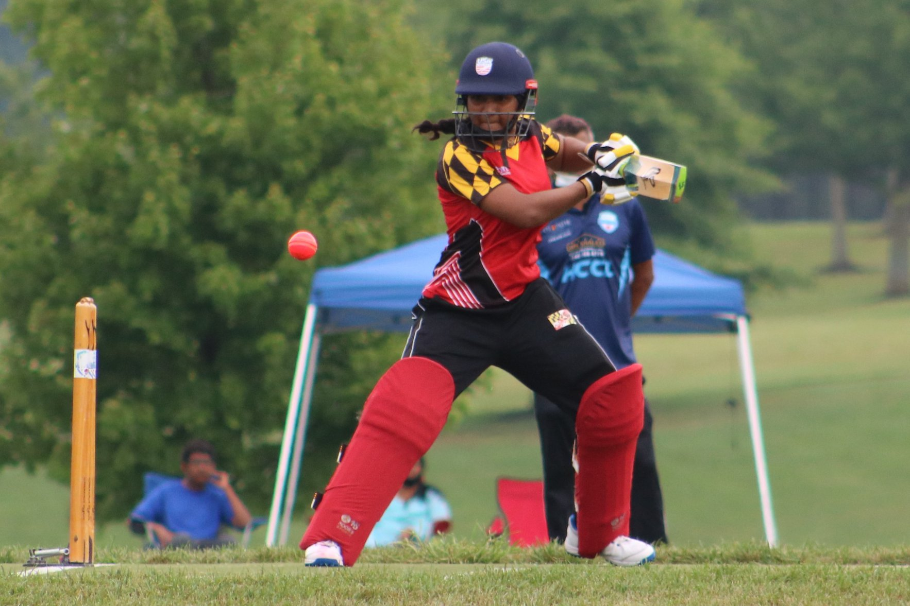
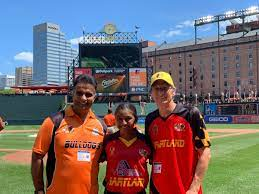

Maryland is at the forefront of youth cricket in the U.S.
BY THOMAS HINDLE - APRIL 23, 2021

Lisa Ramjit plays a shot for Maryland in the national women’s cricket league tournament in 2020 (Sham Chotoo)
In 2012, Sham Chotoo went to the Bowie Boys and Girls Club with the idea for a sports program, something to offer an alternative to the basketball, baseball, football and soccer already available.
Cricket, he insisted, would be a fun alternative, and an intriguing secondary option for kids.
He had 50 sign ups. The next year he had 100. And by the end of 2013, he said, he was teaching cricket to over 1,000 students in elementary schools around Maryland.
Chotoo is at the center of a burgeoning movement in the state, one where cricket is growing, especially at the youth level.
Chotoo, originally from Trinidad and Tobago, came to the U.S. and found cricket to be a subculture within Prince George’s and Montgomery counties. While it thrived in those tiny enclaves, he and a small group of others believed the sport could grow — helping establish the Maryland Youth Cricket Association.
And they’re steadily working toward that goal.
It started with schools and local recreation centers, selling the sport as a taste of something different to parents who might want their children to play something else.
“The large number of interested parties were American parents who just wanted something different for their kids.”
- Sham Chotoo
“The large number of interested parties were American parents who just wanted something different for their kids,” Chotoo said.
From there, though, it expanded. Soon there were elementary schools, then middle schools. Chotoo found that cricket was popular among students, and he tapped into the affinity for the sport, creating the first elementary school cricket league in the nation, pitting eight schools against each other in casual matches.
In that league, and in those schools, he played a modified version of the sport. The pads and helmets usually used by batsmen were left on the sidelines, and he switched out a hard leather ball for an easier-to-use vinyl one. It was a low-intensity game, but one that caught on quickly.
He didn’t have proper pitches, either, instead using blacktops in playgrounds, baseball diamonds, or rolling out special mats.
But he found that as the sport grew at the youth level, a competitive edge developed. So, in 2013, Chotoo helped launch the Maryland Youth Cricket League, formalizing the process outside of a school environment.
That development came with some problems, though. Chotoo and his colleagues at the Maryland Youth Cricket Association wanted to offer a full-fledged version of the game, one with proper equipment and officiating — but there were no proper fields.
“Everybody wanted a cricket pitch. We just didn’t have them,” Chotoo said.
However, with funding, as well as petitioning for local government contributions, fields started to pop up. There are now 33 in Maryland, concentrated in Howard, Montgomery and Prince George’s counties — giving the state the biggest youth cricket setup in the nation. And with that infrastructure, the sport has grown exponentially.
There are now 44 youth teams in Maryland and Virginia, playing at four different age groups. Maryland is home to the first all-girls cricket league in the country — alongside a well-established adult league.
The talent pool has grown, too. Five of the 24 players on the United States Girls’ U-19 team were from Maryland. And in 2019, Maryland sent a middle school student, Lisa Ramjit, to the women’s national squad, where she took the U.S. team’s first wicket in a match against Canada.
There are a number of rising stars on the boys’ side, too. Wesley Jackson, a 13-year-old from Silver Spring, Maryland, plays for three teams, and spends five days a week training. On Sunday he smashed 235 runs in the season opener, breaking a state record.
“230 sounded better than 200,” Jackson said.
His dad, Jason, has been swept up in the process. Wesley tried numerous sports as a kid, Jason said. But cricket was the one he settled on, after playing for one of Chotoo’s elementary school teams.
And things appear to be going well so far.
“It’s been a whirlwind since then,” Jason Jackson said. “But we fell in love with the things our kids fell in love with.”
Still, Chotoo and the MYCA have loftier goals. They want more support from local governments to strengthen the facilities around the Maryland area — something Prince George’s County moved toward with a bill in the General Assembly in March, though it failed to pass.
At the national level, they might just be getting some help. After a tumultuous start in the early 2000s, Major League Cricket is revamping itself as a professional sport, with a targeted start date of 2022. The six-team organization will feature a franchise in Washington, D.C. — which Chotoo hopes will expand local cricket.
Furthermore, the International Cricket Council, the sport’s global governing body, is making attempts to push cricket into underutilized markets — the U.S. among them.
And with that interest, Maryland just might be getting somewhere.
“I hope that someday soon, kids will be able to put on NBC or ABC and see a cricket match,” Chotoo said.
There are undoubtedly further obstacles for youth cricket in the U.S.
Funding, though improving, isn’t a priority. And though the game is spreading, it’s not quite worked its way into the mainstream consciousness.
However, Chotoo is helping lead the charge in Maryland, one field, and one student at a time.

Sham Chotoo pictured with his player and MD Youth Cricket New Chairman, Treasurer
“Once kids get into cricket, they realize why it’s the second most popular sport in the world,” Chotoo said.